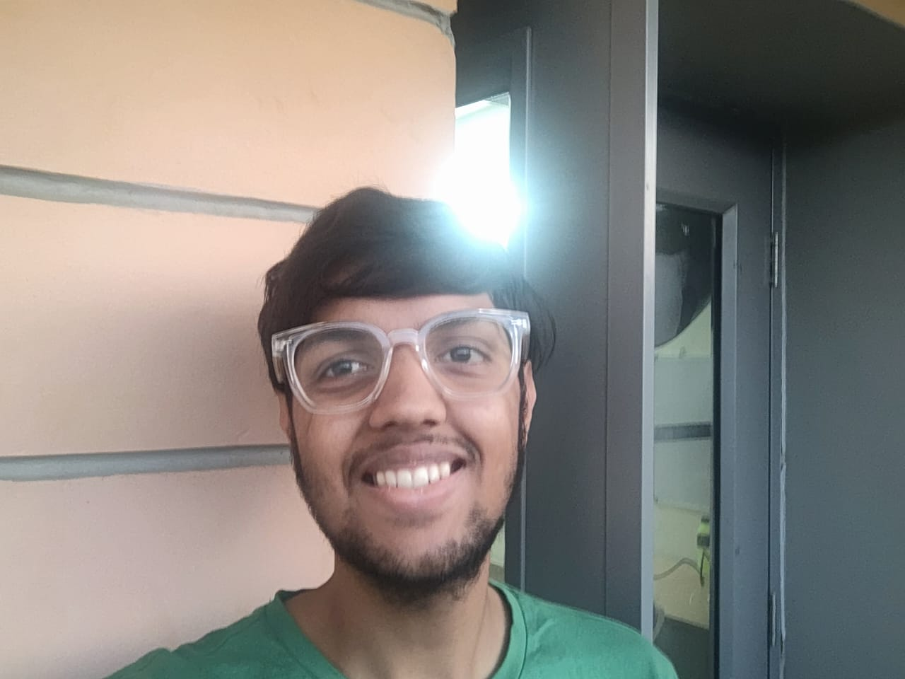

Atharv Singhal

Objective Statement
I am looking forward to work with commitment in the field of Computer Science with the aim of constantly evolving myself and making the best use of my capabilities to contribute to my team's goal..
Education
- Bachelor of Engineering, Computer Science and Engineering - Birla Institute of Technology & Science, Pilani Hyderabad Campus (2023-2027)
Work Experience
Summer Intern-AudioPod AI, Inc.
May 2025-July 2025
Worked on develpoment of onboarding page of the company website including tutorials for using features available on the website.
Implemented cookie consent banner on webpage to store user preferences in local storage using React and Next.js framework.
Formulated strategies and suggested changes for User Acquisition and User Retention of the company.
Skills
- Data Structure & Algorithms
- Object Oriented Programming
- Programming languages- C++, C, Java, SQL, HTML, Prolog
- Problem Solving and Analytical skills
- Web Development- HTML and basics of CSS
- Teamwork and uplifting the spirits of co-workers to attain the goal
Accomplishments
- 2nd Runner Up in SEEP 2024(Entrepreneurial Contest)
- Winner National Brainobrain Competition 2015 (Abacus)
- Merit Certificate in Indian Olypiad Qualifier in Mathematics 2022
My Hobbies
Contact Details